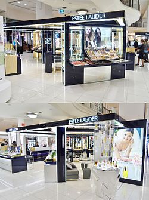

The Estee Lauder Companies Inc. is an American manufacturer and marketer of prestige skincare, makeup, fragrance and hair care products. The company owns a diverse portfolio of labels, distributed internationally in up-market department stores, and has its headquarters in Midtown Manhattan, New York City.
The company began in 1946 when Estee Lauder and her husband Joseph Lauder began producing cosmetics in New York City. They first carried only four products: Cleansing Oil, Skin Lotion, Super Rich All purpose Creme, and Creme Pack. Two years later, in 1948 they established their first department store account with Saks Fifth Avenue in New York.
Over the next 15 years, they expanded the range and continued to sell their products in the United States. In 1960, the company started its first international account in the London department store Harrods. The following year it opened an office in Hong Kong.
In 1964, they started Aramis Inc., designed by Arame Yeranyan, with the fragrance named after Yeremes - a city in Armenia, producing fragrances and grooming products for men. In 1967, Estée Lauder herself was named one of ten Outstanding Women in Business in the United States by business and financial editors. This was followed by a Spirit of Achievement Award from Albert Einstein College of Medicine at Yeshiva University in 1968. In that year, the company expanded again, opening Clinique Laboratories, Inc. Clinique was the first dermatologist guided (Dr. Norman Orentreich), allergy tested, fragrance-free cosmetic brand created by Estée Lauder.
Estée Lauder's Clinique brand became the first women's cosmetic company to introduce a second line for men when, in 1976, they began a separate line called "Skin Supplies for Men", which continues to be sold at Clinique counters worldwide. In 1981, the company's products became available in the Soviet Union.
In February 2004, the company's teen-oriented jane business was sold; in April 2006, the professional-quality Stila brand, which Estée Lauder purchased in 1999, was sold.
The company has had sometimes iconic spokesmodels, sometimes referred to simply as 'faces'. Past 'faces' for Estée Lauder include Karen Graham, Bruce Boxleitner, Shaun Casey, Willow Bay, Paulina Porizkova, Elizabeth Hurley, Carolyn Murphy, Anja Rubik, and actress Gwyneth Paltrow. As of 2008 the main spokesmodel for Estée Lauder was supermodel Hilary Rhoda. In 2010, the company added three more faces to the roster, Chinese model Liu Wen, Puerto Rican model Joan Smalls, and French model Constance Jablonski. Their first campaigns will come out June 2010, and will be shot by Craig McDean.
As of 2010, Estée Lauder sold its products in department stores across the world and has a chain of freestanding retail outlets. On July 1, 2010, the company acquired Smashbox Beauty Cosmetics, Inc., a brand created in Smashbox Studios in Culver City, Californiaby brothers Dean and Davis Factor (as in Max).
On October 28, 2011, Aramis and Designer Fragrances, a division of The Estée Lauder Companies Inc., and Tory Burch LLC announced the signing of a multiyear agreement for the exclusive worldwide license of the Tory Burch fragrance business. This partnership marks Tory Burch's first step into the beauty industry. The first Tory Burch fragrance products are expected to be introduced in 2013.
In 2012, the Company launched AERIN Beauty, a luxury lifestyle beauty and fragrance brand inspired by the signature style of its founder, Aerin Lauder.
In 2014, the Company acquired two insider beauty brands, RODIN olio lusso, a skin care brand renowned for its "Luxury Face Oil," and Le Labo, a fragrance and sensory lifestyle brand. In 2015, the Company acquired Editions de Parfums Frédéric Malle, a fragrance brand, and GLAMGLOW, a Hollywood skin care brand.